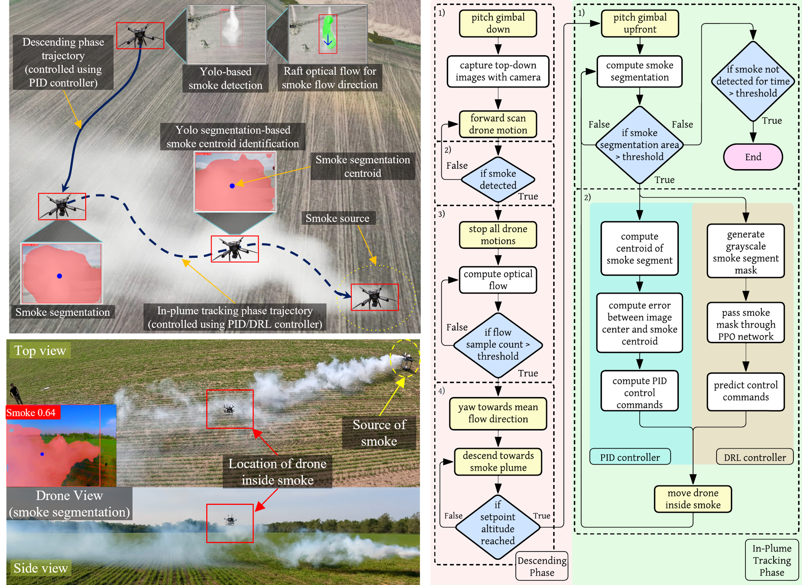

|
Srijan Kumar Pal I'm a Master's in Robotics student at the University of Minnesota, where I work under Prof. Jiarong Hong, as a part of the Flow Field Imaging Lab. During my time at UMN, I have also had the opportunity to collaborate with Prof. Maria Gini and Prof. Changyun Choi. Previously I received my Bachelor's degree from Jadavpur University. |

|
ResearchI'm interested in computer vision, vision-based robot learning, and control systems. My research focuses on developing vision-based controllers that enable autonomous systems to perceive, navigate, and interact intelligently in dynamic, unstructured environments. |
|

|
Autonmous Drone for Dynamic Smoke Plume Tracking
Srijan K. Pal, S. Sharma, N. Krishnakumar, J. Hong arXiv, 2024 Project page / Paper / Presentation / GitHub An autonomous drone controller, trained via a custom PPO-based deep reinforcement learning framework integrated with YOLO-based smoke segmentation, trained on Unreal Engine simulation, and deployed on Pixhawk quadcopter (equipped with Jetson Orin), for robust dynamic smoke plume tracking in the unsteady wind, improving tracking efficiency (vs PID) by 15%. |


|
EVER: Exact Volumetric Ellipsoid Rendering for Real-time View Synthesis
Alexander Mai, Peter Hedman, George Kopanas, Dor Verbin, David Futschik, Qiangeng Xu, Falko Kuester, Jonathan T. Barron, Yinda Zhang arXiv, 2024 project page / arXiv Raytracing constant-density ellipsoids yields more accurate and flexible radiance fields than splatting Gaussians, and still runs in real-time. |
|
Source code stolen from John Barron's Website. |